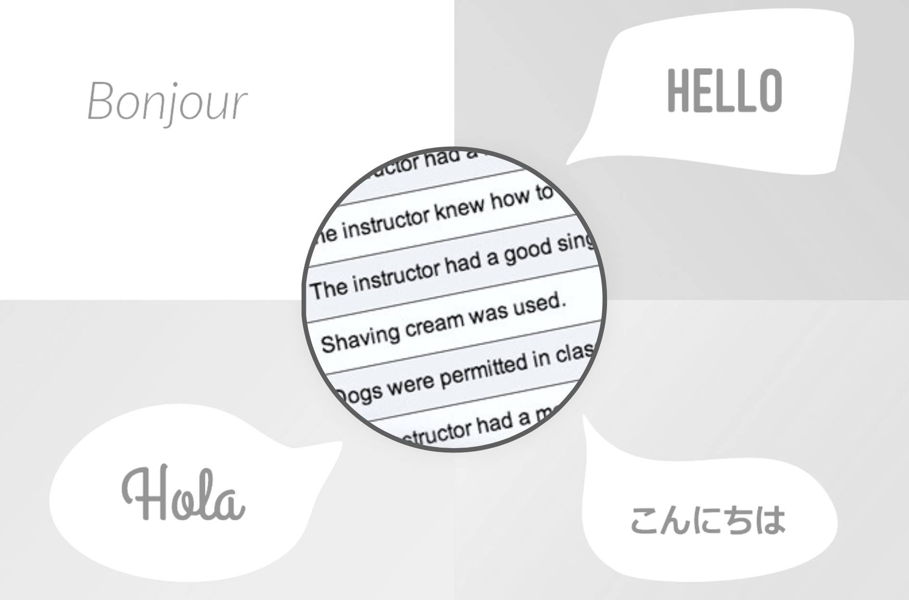

Assignment 07
DICHOTOMOUS CATEGORICAL PREDICTORS
The goal of this assignment is to give you experience fitting and interpreting regression models with categorical predictors. For this assignment, you will again examine whether there are differences in course evaluation scores—and thus on earnings differences—between native and non-native English speaking professors. To do so, you will use the data in the evaluations.csv file to fit a series of regression models to predict the variation in course evaluation ratings.
Instructions
Submit your responses to each of the questions below in a PDF document. All graphics should be resized so that they do not take up more room than necessary and also should have an appropriate caption. This assignment is worth 15 points. (Each question is worth 1 point unless otherwise noted.)
Unadjusted Group Differences Model: ANOVA
Fit a regression model using the dummy-coded native_english predictor to explain variation in course evaluation scores. Use the glance() and tidy() functions to examine the output.
Write the fitted regression equation.
Interpret the intercept coefficient.
Interpret the slope coefficient.
In terms of means (not betas), write the null hypothesis (using mathematical notation) associated with the t-test of the slope? Be specific.
Based on results of the t-test for the slope, what do you conclude about differences in evaluation scores between native and non-native English speaking professors?
Use the fitted regression equation to estimate (a) the mean course rating for native and (b) the mean course rating for non-native English speakers. Show your work.
Adjusted Group Differences Model: ANCOVA
Now, suppose you want to examine differences in course evaluation scores between native and non-native English speakers, but this time you want to control for differences in professors’ beauty ratings and the number of courses for which the professor has evaluations. Fit this model and use the glance() and tidy() functions to examine the output.
Write the fitted regression equation.
Interpret the fitted regression coefficient for
native_english.Compare the size and direction of the difference in course evaluation scores between native and non-native English speakers in the adjusted model to those from the unadjusted model. How do they compare? Also compare the uncertainty in the estimates.
Write the fitted regression equation for native English speakers. (Note: This equation should only include the effects of beauty and the number of courses for which the professor has evaluations.)
Write the fitted regression equation for non-native English speakers. (Note: This equation should only include the effects of beauty and the number of courses for which the professor has evaluations.)
Compute the adjusted mean course rating for native and non-native English speakers (based on professors having an average beauty and an average number of courses). Show your work.
Model Assumptions
Create the density plot of the marginal distribution of the standardized residuals from the ANCOVA model. Add the confidence envelope for the normal distribution. Explain whether or not this plot suggests problems about meeting the normality assumption.
Create the scatterplot of the standardized residuals versus the fitted values from the ANCOVA model. In the plot identify observation with extreme residuals (\(\leq-3\) or \(\geq3\)) by indicating the row number of that observation in the plot.
Explain whether or not this plot suggests problems about meeting the linearity and homogeneity of variance assumptions.